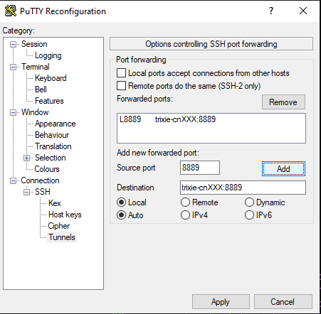

Experimentation - Jupyter Notebook¶
At the end of this tutorial you will have:
- created a "env" directory inside a project directory with:
- an environment running keras using CPU(s)
- an environment running keras using GPU(s)
- defined 2 slurm jobs starting jupyter making use of respective environment
Creating conda environments¶
#load conda module
module load conda/3-24.9.0
#define a project variable
export MY_PROJECT_ROOT=$HOME/sample_project
#go to project root
cd $MY_PROJECT_ROOT
#create a directory for all the environments
mkdir env
#create the CPU variant
conda create -c conda-forge -p $MY_PROJECT_ROOT/env/Covid-Net-cpu python=3 jupyterlab imutils opencv
matplotlib keras scikit-learn pandas
#create the GPU variant
conda create -c conda-forge -p $MY_PROJECT_ROOT/env/Covid-Net-gpu python=3 jupyterlab imutils opencv
matplotlib keras scikit-learn pandas tensorflow-gpu
#create a directory to hold jobfiles
mkdir $MY_PROJECT_ROOT/jobs
example of a $MY_PROJECT_ROOT/jobs/jupyter-cpu.job file¶
#!/bin/bash -l
#SBATCH --account=covid-01
#SBATCH --partition=TrixieMain
#SBATCH --time=04:00:00 ####MAXIMUM 48:00:00 on Trixie
#SBATCH --job-name=My_Awesome_Jupyter.cpu ####Try to be a bit descriptive or use the comment if you prefer shorter job names
##SBATCH --comment="Comment on job" ####Optional comment
#SBATCH --mem=5G
#SBATCH --nodes=1
#SBATCH --ntasks-per-node=1
#SBATCH --cpus-per-task=2
#SBATCH --output=%x-%j.out
##### To help debugging
#set -x
export MY_PROJECT_ROOT=$HOME/sample_project
module load conda/3-24.9.0
source activate $MY_PROJECT_ROOT/env/Covid-Net-cpu
jupyter-lab --ip=*
example of a $MY_PROJECT_ROOT/jobs/jupyter-gpu.job file¶
#!/bin/bash -l
#SBATCH --account=covid-01
#SBATCH --partition=TrixieMain
#SBATCH --gres=gpu:1
#SBATCH --time=04:00:00 ####MAXIMUM 48:00:00 on Trixie
#SBATCH --job-name=My_Awesome_Jupyter.gpu ####Try to be a bit descriptive or use the comment if you prefer shorter job names
##SBATCH --comment="Comment on job" ####Optional comment
#SBATCH --mem=5G
#SBATCH --nodes=1
#SBATCH --ntasks-per-node=1
#SBATCH --cpus-per-task=2
#SBATCH --output=%x-%j.out
##### To help debugging
#set -x
export MY_PROJECT_ROOT=$HOME/sample_project
module load conda/3-24.9.0
source activate $MY_PROJECT_ROOT/env/Covid-Net-gpu
jupyter-lab --ip=*
Scheduling a GPU enabled Jupyter notebook¶
#starting a GPU enabled Jupyter notebook
sbatch $MY_PROJECT_ROOT/jobs/jupyter-gpu.job
Submitted batch job 4502
#you will get a jobid look for your log file names based on the job-name and the jobid
tail -f My_Awesome_Jupyter.gpu-4502.out
#look for the Jupyter notebook output you will get the node it is running on and the port number it is listening on. for example:
#[...]
To access the notebook, open this file in a browser:
file:///gpfs/home/paulp/.local/share/jupyter/runtime/nbserver-24429-open.html
Or copy and paste one of these URLs:
http://cn122:8888/?token=388199bb6ef0cad54ef195f1286301548fc15ec2a39eee3c
or http://127.0.0.1:8888/?token=388199bb6ef0cad54ef195f1286301548fc15ec2a39eee3c
#At that moment a GPU enabled Jupyter notebook is running on compute node "cn122" on port 8888
#Using an ssh tunnel 8888:cn122:8888 (using the following ssh command from the hn2 command line prompt)
ssh -Y -R 8888:cn122:8888 hn2
#would allow you to access the remote jupyter notebook by connecting to
#http://127.0.0.1:8888/?token=388199bb6ef0cad54ef195f1286301548fc15ec2a39eee3c

Releasing Resources for others to use¶
#Don't forget to release resources when done by canceling your job
scancel 4502
sample python script that shows devices available to use by tensorflow 2.2.0¶
import tensorflow as tf
#display tensorflow version
print(tf.__version__)
from tensorflow.python.client import device_lib
#output tensorflow devices
print(device_lib.list_local_devices())
Useful tip¶

- check on the queue using "squeue" or "squeue -u $USER" - a running job will have the "R" state a job waiting to run will show "PD" in the state column
- you can as some information on the partitions using "sinfo"
- you can get some details on accounting using "sacct"
- The Terminal within jupyter-lab runs within your job so it is safe to use to perform monitoring or other tasks that could be bothersome to others if ran on the head node. If you intend to use a lot of resource like this consider raising how many cores/cpus you request and maybe the RAM also...
- a nice one liner to run a monitoring task for the GPU, this command will run indefinitely each second and output the listed parameters.
nvidia-smi --query-gpu=timestamp,name,pci.bus_id,driver_version,pstate,pcie.link.gen.max,pcie.link.gen.current,temperature.gpu,utilization.gpu,utilization.memory,memory.total,memory.free,memory.used --format=csv -l 1
Making a SSH Tunnel Straight to the Node¶
This is somewhat of a rehash of the previous section but here's another way by creating a tunnel straight to the node.
ScientificPythonStack¶
ScientificPythonStack is essentially a community suggested set of commonly used python tools/libraries for scientific work.
pip install numpy scipy matplotlib ipython pandas sympy jupyterlab notebook
SLURM job jupyter.slurm¶
This is an example slurm script to start a job running jupyter.
It uses 6 CPU cores and 16G or RAM.
In its current state, the following script doesn't ask for a GPU.
If you need a GPU, uncomment ##SBATCH --gres=gpu:1 to #SBATCH --gres=gpu:1.
#!/bin/bash
# vim:nowrap:
#SBATCH --job-name=Jupyter
#SBATCH --comment="Jupyter Notebook"
# On Trixie
#SBATCH --partition=JobTesting
#SBATCH --account=dt-mtp
##SBATCH --gres=gpu:1
#SBATCH --time=6:00:00
#SBATCH --nodes=1
#SBATCH --ntasks-per-node=1
#SBATCH --cpus-per-task=6
#SBATCH --mem=16G
#SBATCH --open-mode=append
#SBATCH --requeue
#SBATCH --signal=B:USR1@30
#SBATCH --output=%x-%j.out
# Fix SLURM environment variables.
SLURM_JOB_CPUS_PER_NODE=${SLURM_JOB_CPUS_PER_NODE%%(*)} # '24(x2)' => 24
SLURM_TASKS_PER_NODE=${SLURM_TASKS_PER_NODE%%(*)} # '4(x2)' => '4'
# NOTE: We set OMP_NUM_THREADS or else we get the following Warning:
# WARNING:torch.distributed.run:
# *****************************************
# Setting OMP_NUM_THREADS environment variable for each process to be 1 in
# default, to avoid your system being overloaded, please further tune the
# variable for optimal performance in your application as needed.
# *****************************************
export OMP_NUM_THREADS=${SLURM_CPUS_PER_TASK:-$(nproc)}
source /gpfs/projects/DT/mtp/venv/ScientificPythonStack/bin/activate ""
jupyter notebook --no-browser --port 8889 --ip=*
Then start the notebook.
sbatch jupyter.slurm
If you need a GPU, you can start your job using:
sbatch jupyter.slurm --gres=gpu:1
You will need to know on what node your job is running in order to properly setup a ssh tunnel to it.
Use squeue --user $USER to get the worker node name.
JOBID NAME USER ST TIME NODES NODELIST(REASON) SUBMIT_TIME COMMENT
90324 Jupyter larkins R 0:06 1 trixie-cn101 2024-11-21T10:06:2 Jupyter
SSH Tunnel¶
Putty¶
To create a tunnel with Putty replacing cnXXX with your worker's hostname (trixie-cnXXX):

- right click putty's title bar
- Change Settings...
- Connection > SSH> Tunnels
- Source port
8889 - Destination
trixie-cnXXX:8889 - CLICK ADD
- then
Apply
ssh¶
ssh -L 8889:trixie-cnXXX:8889 trixie.res.nrc.gc.ca
Access your Jupyter Notebook¶
You can look at the log tail -f Jupyter*.out to grab your jupyter's url which has a secret token.
This url looks like http://localhost:8889/tree?token=f3e7dee8b55e94912fb4769b4cb0896cc57eeaa1fb7b317d.
Using your favorite browser, use the url to access your Jupyter Notebook.
Finally Stop your Worker¶
It is IMPORTANT to scancel <JOBID> when you are not using your jupyter notebook.